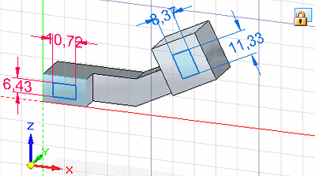

Reposition Origin command
The Reposition Origin command redefines the grid origin and the sketch plane origin at a location you specify. This is helpful when you want to:
-
Draw or place 2D elements at exact locations.
-
Draw or place 2D elements at exact distances from other elements.
-
Change the grid angle. See the Help topic, Reposition the sketch plane origin.
-
Add dimensions and constraints that you want to maintain horizontal and vertical to another element.
Example:These 2D dimensions are horizontal and vertical with respect to the coplanar sketch geometry drawn on the model faces. The Reposition Origin command lets you move the origin and X-axis orientation of the sketch plane from one face to another to achieve this.

See the Help topic, Set sketch plane horizontal and vertical orientation for dimensioning.
You can move the origin as often as needed.
If you want to reposition the origin exactly at the intersection of grid lines, first set the Snap To Grid option, as well as the Using Points option, on the Grid Options dialog box. Then, use the Reposition Origin command.
This command is available only when you have locked a sketch plane.